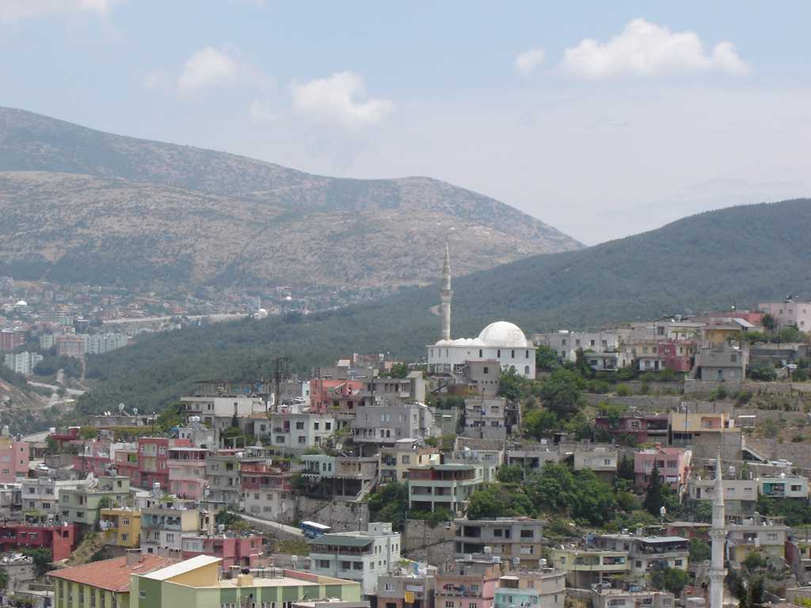
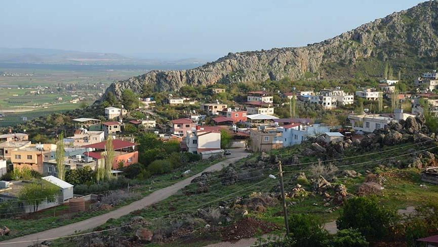
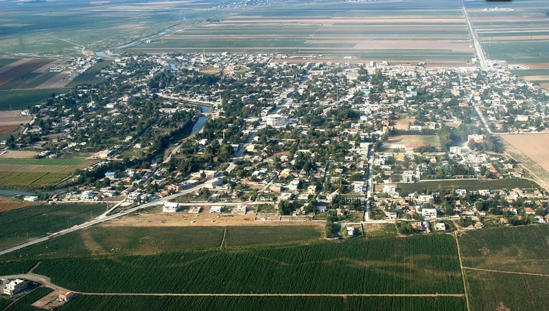
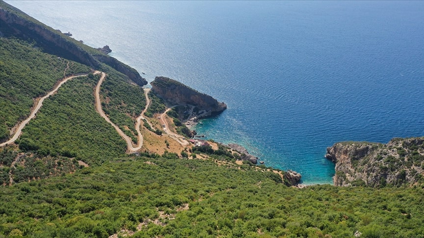

Bir Hataylıyı acı asla korkutamaz.
Hatay, Türkiye'nin Akdeniz Bölgesi'nde, Akdeniz'in doğu ucunda kıyıları olan bir ilidir.
Hatay ilinin
merkezi Antakya'dır.
Hatay ili, 2021 yılında 1.670.712 kişiden oluşan bir nüfusa sahipti.
Akdeniz'in doğu şeridinde 35° 52'
- 37° 4' kuzey enlemleri ile 35° 40' - 36° 35' boylamları arasında yer alan Hatay'ın doğusunda ve güneyinde
Suriye, batısında Akdeniz, kuzeybatısında Adana, kuzeyinde Osmaniye ve kuzeydoğusunda Gaziantep bulunur.
Antakya
Antakya (Arapça: انطاكيّة, Anṭākye; Yunanca: Ἀντιόχεια, Antiohia), Hatay ilinin nüfus bakımından en büyük ilçesidir ve merkezidir. Yeni düzenlemeyle birlikte Antakya ve Defne Belediyesi olarak ayrılmıştır. Ortasından Asi Nehri geçmektedir. Hristiyanlığın önemli mukaddes mekânlarından biridir. Tarihçe Tarih kaynaklarına göre Antakya, MÖ 300 civarında Büyük İskender'in komutanlarından Seleucus Nicator tarafından kurulmuştur. Antik kaynaklara göre Antakya üç yüz bin nüfusuyla Roma İmparatorluğu'nun 3. dünyanın ise 4. büyük kentiydi. Babası Antiochus'un isminden 'Antiocheia' adıyla kurduğu şehir, Silpius Dağı (bugünkü Habib Neccar Dağı) eteğinde ve Asi Nehri (Orontes) kenarında yer almıştı. Acus'un yönetimine giren topraklarda Antakya dışında başka yerlerde çok sayıda Antiocheia daha kurulmuştu.
İskenderun
İskenderun (Yunanca: Αλεξανδρέττα, Aleksandretta, Türkçe karşılığı "Küçük İskenderiye"; Arapça: لواء اسكندرون, Lue İskenderun, anlamı "İskenderun Tugayı"[2]), Hatay'ın nüfus bakımından 2. büyük ilçesidir.[9] Nüfusu 248.335 kişidir[10]. İlçe Türkiye'nin en büyük limanlarından birine sahip olup bu bakımdan deniz ticaretinde önemli bir konumdadır. MÖ 333 yılında, Büyük İskender’in İssos yakınlarında kazandığı zaferden sonra Alexandreia adıyla kurulmuştur. Bu kent kurulmadan önceleri ise burada Myriandos adında bir Fenike şehri bulunmaktaydı. Makedonya Kralı Büyük İskender'in, Pers Şeyhi III. Darius’a karşı İsos Vadisi'nde üstünlük sağlamasıyla temeli atılan bu şehir, sahip olduğu coğrafi önemin etkisiyle tarihinde birçok defa işgale uğramıştır.
Dörtyol
Dörtyol, Hatay'ın ilçelerinden biridir. Nüfusu 127.989 kişi olup bu bakımdan 922 ilçe ve 51 merkez ilçe arasında 192, ilde 4.dür.
Coğrafya
İlçe Doğu Torosların uzantısı olan Nur Dağları (Amanos) ile Akdeniz'in İskenderun Körfezi arasında Kuzey-Güney doğrultusunda uzanan Dörtyol ve Payas Alüvyal ovalarından meydana gelmiştir. Doğusunda Nur Dağlan ve Hassa ilçesi, batısında Akdeniz ve İskenderun Körfezi, Kuzeyinde Erzin ilçesi ve güneyinde ise İskenderun ilçesi bulunmaktadır.
İklimi; yazları sıcak ve kurak, kışları ılık ve yağışlı olup, tipik bir Akdeniz iklimi hüküm sürmektedir. İlçede yağışlar yağmur şeklinde olup, Türkiye'de Rize ilinden sonra en fazla yağış alan merkezlerdendir. İlçe merkezinin denizden yüksekliği 70 m'dir. En çok yağış şubat, mart, nisan ve aralık aylarında, en az yağış ise ağustos ayında yağmaktadır. İlçede kar dağlık yüksek kesimlere düşmektedir. İlçede en düşük sıcaklık -7.0 °C olarak 1985 yılında gerçekleşmiştir. İlçede don hadisesi genellikle mart ayında görülmekte olup, nadiren de olsa kasım, aralık, ocak ve şubat aylarında da görülmektedir.
Kış ayları süresince, Kasım ve Mart arasında, hakim rüzgârlar kuzey ve kuzeydoğu yönündendir. Güneydoğu yönünden esen Yarıkkaya isimli yerel fırtına -rüzgâr hızı saatte 50-60 mile çıkabilmektedir- için kış aylarında her zaman hazırlıklı beklenmelidir. Rüzgâr nisan ayında yön değiştirmeye başlar. Haziran ve eylül ayları süresince güney ve güneybatı rüzgârları hakimdir. Sahildeki en yüksek dalgalar rüzgârın güneybatıdan olduğu zamandadır. Güneybatı rüzgârları sahili ölü dalgalarla etkiler. Bu ölü dalgaların boyları bazen 2-3 metreye ulaşır.
Sahilde ortalama gelgit farkı 0.5 metre civarındadır. Yüzey akıntıları (5-7 metre derinlik) güney ve güneybatıya doğrudur ve ortalama akıntı hızı 0,3 deniz milinden az olup daha derinlerde 0,5 deniz miline ulaşır.[4]
İlçenin yüzölçümü 342 km²'dir (132 mil²).
Defne
Defne Hatay'da Antakya'nın güneyinde yer alan ilçedir. 2012 yılında çıkan belediyeler yasası ile Antakya'dan ayrılmış ve ayrı ilçe ilan edilmiştir.[2] İlçe, Hatay Merkezi ikiye bölünerek meydana getirilmiştir ve parçalardan güneyde yer alan Defne ilçesi olarak adlandırılmıştır. Mart 2019 seçimlerinde Belediye Başkanı CHP'ten İbrahim Güzel Seçilmiştir.
Altınözü

Altınözü Hatay'ın güneydoğusunda yer alan, Suriye ile sınırı olan ilçelerindendir. Bağlı 48 mahallesi vardır.
Toprağı tarıma elverişli olup, en yoğunu zeytincilik olmak üzere, tütün, buğday, arpa, biber ve çeşitli sebze meyveler yetiştirilir. Hatay'da zeytin tarımının en yoğun olduğu ilçedir. İlçede, sulamada kullanılan yapay bir gölet olan Yarseli Barajı vardır.
Bunun yanında Türkiye ve Suriye ortaklığı ile Asi Nehri üzerinde yapımı devam eden Dostluk Barajı'nın tamamlanması ile kış aylarındaki taşkınların önlenmesi ve 10 bin hektar alanın sulanması sağlanabilecek. Ayrıca baraj sulamanın yanında balıkçılık, rekreasyon ve su sporlarının yapılabileceği şekilde tasarlanacak. Ayrıca ilçede daha önce bulunan Altınözü Karbeyaz (Yiğityolu) sınır kapısı, yaklaşık 1970 Yılına kadar aktif olarak faaliyet gösterdi. Türkiye ile Suriye arasında yaşanan bir takım gerginliklerden dolayı kapı kapatıldı ve açılması için girişimde bulunulmadı.
Arsuz
Arsuz
Hatay ilinin bir ilçesidir. Amanos Dağları ve Akdeniz kıyısı arasında yer almaktadır. 2020 yılı itibarıyla 97.217 kişilik nüfusa sahiptir. Uluçınar ile Gökmeydan mahallelerinden oluşan ilçe merkezine tamamı dağlık ve kırsal kesimlerde bulunan 25 köy bağlıdır. İlçenin ekonomik durumu tarım, hayvancılık, turizm ve balıkçılığa dayanmaktadır. Arsuz, yüzölçümü bakımından Hatay'ın 4. büyük ilçesidir.
Belen

Belen
Hatay ilinin 15 ilçesinden birisidir. Amanos Dağlarında yer almaktadır.
Belen, Türkiye'nin önemli geçitlerinden "Belen Geçidi"'ne de adını veren bir yerleşim yeridir. Belen ~500 metre rakımdadır geçidi yaklaşık 5 km ileride Kıcı mahallesinden sonradır. Gedik Nur Dağlarında 740 metre yüksekliktedir.
İskenderun'u Antakya'ya bağlayan yolun üzerinde yer alan Beylan'da Birinci Dünya Savaşı öncesinde 1.791 Ermeni yaşıyordu.[3] Burada bir kilise ve 180 öğrencinin devam ettiği bir de okul vardı .
Dağ geçidinin çevresinde basamaklar halinde inşa edilmiş olan Beylan, aşağıdaki ovada, İssus'ta, Pers Kralı Darius/Dara'yla savaşmaya hazırlanan Büyük İskender'in geçişine tanıklık etmişti (İÖ 333). Ermeniler daha ziyade ipekböcekçiliği ve dokumacılıkla uğraşırlardı.
Belen'in şehir teşkilatlanmaları 1516 yılına Yavuz Sultan Selim dönemine kadar dayanmaktadır. Belen Osmanlı döneminde Halep Vilayeti'ne bağlı bir kaza (ilçe) olmuştur. Hatay'ın Türkiye'ye katılmasıyla İskenderun ilçesine bağlı bucak (nahiye) haline getirilen Belen, 7 Mayıs 1990'da 3644 sayılı kanun ile ilçe oldu.
Erzin

Erzin
Hatay'ın bir ilçesidir.
Osmaniye il merkezine 23, Dörtyol ilçesine 15 ve İskenderun ilçesine 45 km mesafede, E-5 karayolu, Toprakkale-İskenderun demiryolu ve yine Toprakkale-İskenderun TEM otoyolunun kesiştiği istasyondan, 7 km’lik yolu kat ederek ilçe merkezine ulaşılır.
İlçe merkezinin 35.137 olan nüfusu köylerle birlikte toplam 41.700 (2019 yılı genel nüfus sayımına göre) olup, turizmin canlandırdığı yaz aylarında 60.000’i geçer aldığı göçlerle sürekli artar. Sırtı Nur dağlarına dayanıp ayakları Akdeniz’e doğru uzanan ilçenin 415 km² yüzölçümüne karşılık merkezde rakımı 165 metredir.
Hassa
Hassa
Hatay ilinin bir ilçesidir. Nüfusu 57.361 kişidir.[4] Amanos Dağlarının doğuya bakan eteklerinde, Hatay-Gaziantep il sınırında yer almaktadır. Hassa ilçesi, 1864-1865 yıllarında Amanos Dağlarında yaşamakta olan “Ulaşlı” boyunun isyanı üzerine bölgeye gönderilen Osmanlı Fırka-i Islahiye birlikleri komutanı olan İbrahim Derviş Paşa’nın isyanı bastırarak bölgede konaklaması ile kurulmuştur. Birinci Dünya Savaşı sırasında Fransızlarca işgal edilen ilçe 20 Ekim 1921 Ankara Antlaşması ile 5 Ocak 1922 tarihinde Fransız birliklerince boşaltıldı. Hassa, Hatay’ın Türkiye’ye katılışına kadar Gaziantep ili Islahiye ilçesine bağlı bir bucak iken, Hatay’ın 1939 yılında Türkiye Cumhuriyeti topraklarına katılımı ile ona bağlı ilçe konumuna erişmiştir.
Kırkhan

Kırkhan
Hatay ilinin ilçelerinden biridir. Nüfusu 119.028 kişidir. Hatay'ın en kalabalık 6. ilçesidir.Kırıkhan ilçesinin yüzölçümü 715 km²'dir.[4] Kırıkhan, coğrafi konum ve yüzölçümü bakımından Hatay'ın en büyük ilçesidir. İlçe topraklarının batısında Amanos Dağları, doğusunda Suriye, güneyinde ise Amik Ovası bulunur.
Kumlu

Kumlu
Hatay ilinin ilçesidir. Amik Ovası'nda yer almaktadır. Tarihçe
Kumlu ilçesi, Antakya (Merkez ilçe), Reyhanlı ve Kırıkhan ilçeleriyle komşudur. Amik ovasının merkezinde bulunan ilçe Amik Gölünün istilası altında çeşitli sazlıklarla kaplı bataklık bir yer iken, 1945 yılında iskân yeri olarak tahsis edilmiştir. 1956 yılında Hamam Köyü’nde bulunan nahiye ve jandarma teşkilatı Killik köyüne nakledilmiştir. 1965 yılında nüfusu 2000’in üzerine çıkmasıyla kasaba olan Killik Köyünde 1968 yılında belediye teşkilatı kurulmuştur.[kaynak belirtilmeli] 1945 yılından bu yana halk arasında Kumul olarak anılan yerleşim yerinin adı ise belediye teşkilatının kurulmasıyla Kumlu olarak değiştirilmiştir. Kumlu, 9 Mayıs 1990'da 3644 sayılı kanun ile Reyhanlı'ya bağlı bucak iken ilçe oldu. Payas ilçesinde, yerleşim neredeyse insanlık tarihi kadar eskidir. Anadolu'yu Suriye ve Ortadoğu'ya bağlayan güzergâh üzerinde olması sebebiyle tarihin her döneminde Payas bölgesi stratejik bakımdan önemli bir yerleşim bölgesi oldu. Payas'ın eski çağlardaki adı Baias'tır. Sonraları Bayyas, Bayas ve son olarak da bugünkü hali olan Payas adını almıştır.
Zamanın en büyük iki devleti Bizans İmparatoru Herakleios ile İran Kralı II. Hüsrev zamanında 622'de yapılan büyük savaş Payas'ta olmuştur.
Daha sonraları Payas, bu sefer de Haçlı Seferleri yolu üzerinde olması sebebiyle önemini korumuştur. Haçlıların İlk seferlerinde Anadolu’dan Payas üzerinden çıktıkları bilinmektedir. Payas'taki Cin Kulesi’nin gözetleme amacıyla 13. yüzyılda yapıldığı tahmin edilmektedir. Bölge kısa bir süre Haçlı egemenliğinde kalmıştır.
Payas, Yavuz Sultan Selim'in Mısır seferi ile Osmanlıların eline geçmiştir. Hac yolu üzerinde olması nedeniyle Osmanlılar Payas’a önem vermişler ve Cenevizlilerden temel yıkıntıları ile kalan kaleyi tamamen sökerek aslına uygun olarak 1567-1571 tarihleri arasında bugünkü kale ve hendeği yapmışlardır. Külliye, cami, hamam ve imaret ise 1568-1574 yılları arasında tamamlanmıştır. Payas kalesi, kervansarayı ve limanı ile uzun bir dönem önemini korumuştur .
Osmanlı Devleti tüm doğu seferlerinde Payas Limanı'nı lojistik ikmal üssü olarak kullanmıştır. Son olarak IV. Murat ünlü Bağdat seferinde tüm lojistik ikmalini Payas üzerinden yapmıştır.
Evliya Çelebi seyahatnamesinde Payas'tan teferruatlı bir şekilde bahsetmektedir. Buna göre 17. yüzyılda Payas'ın nüfusu 8.000 civarındadır. Yine Evliya Çelebi'nin anlattıklarından o dönemde de turunç, üzüm ve incir bölgenin en dikkate değer ürünleri arasındadır. Evliya Çelebi yol üstündeki kervansaraylardan en önemlisi olarak Payas kervansarayını göstermiştir. Bu da Payas’ın 17. yüzyıldaki önemini göstermesi açısından dikkate değerdir.
I. Dünya Savaşı sonrasında kısa bir süre Fransız işgaline uğrayan Payas, işgalden fazla etkilenmemiştir. Her ne kadar 200 kişilik bir Fransız birliği ve atanmış bir Fransız kaymakamı bulunsa da bölgedeki çete faaliyetlerinin Payas'ın dağlarında ve özellikle Fındık Yaylası'nda üstlenmesi sonucu işgal hiçbir zaman etkili olmamıştır.
1939 yılında Hatay'ın anavatana katılımıyla sınır kenti olan Payas Hatay’a bağlanmıştır. 1970'li yıllara kadar bir tarım ve bahçecilik beldesi olan Payas, İskenderun Demir ve Çelik Fabrikası'nın kurulmasıyla bir anda büyümüş, 7.000'lerde olan nüfusu 25.000'lere kadar yükselmiştir. O günden bu yana istikrarlı bir şekilde büyüyen Payas, bugün sanayi ve ticarete dayalı ekonomisi, tarihi ve doğal güzellikleriyle Türkiye’nin önemli ilçelerinden birisidir. Payas, 12 Kasım 2012'de 6360 sayılı kanun ile Dörtyol'a bağlı bucak iken ilçe oldu.
Payas

Payas
Hatay ilinin bir ilçesidir. Akdeniz kıyısında İskenderun ve Dörtyol ilçeleri arasında yer almaktadır. Payas ilçesinde, yerleşim neredeyse insanlık tarihi kadar eskidir. Anadolu'yu Suriye ve Ortadoğu'ya bağlayan güzergâh üzerinde olması sebebiyle tarihin her döneminde Payas bölgesi stratejik bakımdan önemli bir yerleşim bölgesi oldu. Payas'ın eski çağlardaki adı Baias'tır. Sonraları Bayyas, Bayas ve son olarak da bugünkü hali olan Payas adını almıştır.
Zamanın en büyük iki devleti Bizans İmparatoru Herakleios ile İran Kralı II. Hüsrev zamanında 622'de yapılan büyük savaş Payas'ta olmuştur.
Daha sonraları Payas, bu sefer de Haçlı Seferleri yolu üzerinde olması sebebiyle önemini korumuştur. Haçlıların İlk seferlerinde Anadolu’dan Payas üzerinden çıktıkları bilinmektedir. Payas'taki Cin Kulesi’nin gözetleme amacıyla 13. yüzyılda yapıldığı tahmin edilmektedir. Bölge kısa bir süre Haçlı egemenliğinde kalmıştır.
Payas, Yavuz Sultan Selim'in Mısır seferi ile Osmanlıların eline geçmiştir. Hac yolu üzerinde olması nedeniyle Osmanlılar Payas’a önem vermişler ve Cenevizlilerden temel yıkıntıları ile kalan kaleyi tamamen sökerek aslına uygun olarak 1567-1571 tarihleri arasında bugünkü kale ve hendeği yapmışlardır. Külliye, cami, hamam ve imaret ise 1568-1574 yılları arasında tamamlanmıştır. Payas kalesi, kervansarayı ve limanı ile uzun bir dönem önemini korumuştur .
Osmanlı Devleti tüm doğu seferlerinde Payas Limanı'nı lojistik ikmal üssü olarak kullanmıştır. Son olarak IV. Murat ünlü Bağdat seferinde tüm lojistik ikmalini Payas üzerinden yapmıştır.
Evliya Çelebi seyahatnamesinde Payas'tan teferruatlı bir şekilde bahsetmektedir. Buna göre 17. yüzyılda Payas'ın nüfusu 8.000 civarındadır. Yine Evliya Çelebi'nin anlattıklarından o dönemde de turunç, üzüm ve incir bölgenin en dikkate değer ürünleri arasındadır. Evliya Çelebi yol üstündeki kervansaraylardan en önemlisi olarak Payas kervansarayını göstermiştir. Bu da Payas’ın 17. yüzyıldaki önemini göstermesi açısından dikkate değerdir.
I. Dünya Savaşı sonrasında kısa bir süre Fransız işgaline uğrayan Payas, işgalden fazla etkilenmemiştir. Her ne kadar 200 kişilik bir Fransız birliği ve atanmış bir Fransız kaymakamı bulunsa da bölgedeki çete faaliyetlerinin Payas'ın dağlarında ve özellikle Fındık Yaylası'nda üstlenmesi sonucu işgal hiçbir zaman etkili olmamıştır.
1939 yılında Hatay'ın anavatana katılımıyla sınır kenti olan Payas Hatay’a bağlanmıştır. 1970'li yıllara kadar bir tarım ve bahçecilik beldesi olan Payas, İskenderun Demir ve Çelik Fabrikası'nın kurulmasıyla bir anda büyümüş, 7.000'lerde olan nüfusu 25.000'lere kadar yükselmiştir. O günden bu yana istikrarlı bir şekilde büyüyen Payas, bugün sanayi ve ticarete dayalı ekonomisi, tarihi ve doğal güzellikleriyle Türkiye’nin önemli ilçelerinden birisidir. Payas, 12 Kasım 2012'de 6360 sayılı kanun ile Dörtyol'a bağlı bucak iken ilçe oldu.
Reyhanlı

Reyhanlı
Türkiye'nin Hatay iline bağlı bir ilçesidir.
Reyhanlı daha önceki tarihlerde İrtah Dinlenme yeri anlamına da gelir. Genelde birkaç Arap aşiretinin yaşadığı yer olarak bilinen İrtah adında küçük bir kasaba idi. 16. yüzyıldan itibaren yoğunlukla Rey bölgesinden göçebe olarak gelen Türkler (Türkmen aşiretleri) bu kasabaya yerleşmişlerdir. 1855 yılında Rumeli’den Kafkas ve Kıbrıs göçmenleri getirilerek kasabaya yerleştirilmiştir. Daha sonra Reyhanlı ismini alan kasaba 1918 yılında Fransızlar tarafından ele geçirilmiş, bucak statüsü ile yönetilmiştir. 8 Temmuz 1938 yılında Fransız işgalinden kurtarılıp, Türkiye Cumhuriyeti topraklarına katıldığı yıl olan 1939 yılında ilçe olmuştur. Türk Edebiyatının önde gelen isimlerinden ailesi Dimetoka göçmeni olan Cemil Meriç'in çocukluğu Reyhanlı'da geçmiştir[1]. Şarkıcı Gökhan Güney Reyhanlı'lıdır. Yemek kültürü çok zengindir.
Yenişehir gölü görülmesi gereken doğal güzelliklerdendir.
Reyhanlı ilçesi Akdeniz bölgesinde ve Hatay’ın doğusunda yer alır. Akdeniz iklimi hakimdir. Doğusunda ve güneyinde Suriye, batısında Hatay merkez ilçesi ve kuzeyinde Kumlu ilçesi bulunmaktadır. İlçeye bağlı 31 köy ve bir merkez belediyesi vardır. Ayrıca önemli bir gelir kaynağı olan Cilvegözü Sınır Kapısı da bu ilçededir.
İlçede genellikle tarıma dayalı ekonomi hakimdir. Amik Gölü'nün 1972 yılında kurutulmasının tamamlanması ile pamuk ve buğday tarım içindeki önemini arttırmıştır. Ürün çeşidinde pamuk ve hububat en büyük paya sahiptir; ilçede ayrıca büyük baş hayvancılık, süt inekçiliği, koyun ve keçi besiciliği de yapılmaktadır. İlçede sanayileşme tarım ve tarıma dayalı sanayi kollarında gelişmiştir. Çırçır ve prese fabrikaları ile iplik, un ve hidrofil pamuk fabrikaları ilçenin önemli sanayi tesisleridir.
Samandağ

Samandağ
Türkiye'nin güneyinde, Hatay ilinin ilçelerinden biri.
Samandağ; Musa Dağı, Keldağ ve Saman Dağı arasında bulunan, Asi Nehri'nin Akdeniz'e döküldüğü noktada oluşmuş deltada kuruludur. 446 km²'lik yüzölçümüne sahip ilçede bağlı belediye sayısı 12, köy sayısı 31'dir. MÖ VII. yüzyılda Yunanlar(İyonyalılar),Asi Nehri 'nin döküldüğü bölgede Al Mina Limanını kurmuşlardır. Bu sayede gemiler, Asi nehrini ulaşım ve ticaret yolu olarak kullanmış, sonradan başkent olacak Antakya'nın bir metropol olmasına büyük katkıda bulunmuşlardır. Al Mina limanı, önemini uzun yıllar korumuştur. MÖ 300 yılında Büyük İskender'in ünlü generali, I. Selevkos Nikator tarafından kurulan Selevkos İmparatorluğu'na başkentlik yapmak üzere bir liman şehri olan Seleucia Pierria (bugünkü adıyla Çevlik) kurulmuştur. Ancak I. Selevkos Nikator, deniz tarafından sürekli artan saldırılar sebebiyle Antioch(Antakya) şehrini kurmuş ve imparatorluğun başkentini oraya taşımak zorunda kalmıştır.
Roma İmparatorluğu döneminde imparator Vespasianus, limanı sel sularından korumak üzere dağlarda tüneller yaptırmıştır. Yapımı toplamda yaklaşık yüz yıla yakın bir zaman boyunca sürdüğü tahmin edilen tüneller, oğlu Titus tarafından tamamlanmıştır. XIV. yy'a kadar Selçuklu, Fatımiler ve Memlük egemenlikleri altında kalan Samandağ, 1516'da Osmanlı hakimiyetine geçmiş ve adı Süveydiye olarak anılmaya başlanmıştır. Samandağ, I.Dünya Savaşından sonra bir müddet Fransızların idaresindeki İskenderun Sancağı sınırları içerisinde kalmıştır. Hatay Devleti'nin kurulmasıyla nahiye statüsüne kavuşan Samandağ, 23 Temmuz 1939'da Referandumla Hatay'ın Türkiye'ye ilhakıyla Türkiye Cumhuriyeti'ne bağlı bir nahiye olmuş, 1948'de Süveydiye adı Samandağ olarak değiştirilerek Hatay iline bağlı bir ilçe olmuştur.
Yayladağı

Yayladağı
Hatay'a bağlı ilçedir ve Türkiye'nin coğrafi olarak en güneydeki ilçesidir. 36°- 42° paralelleri arasındaki Türkiye'nin 36'ncı paraleline yakındır. Yayladağı sınır kapısı ve gümrüğü Türkiye'nin Suriye'ye açılan kara kapılarındandır. Komşu ilçeleri; Altınözü, Samandağ ve Defne'dir.
Tarihçe
İslam bölgeye Abbasiler tarafından getirilmiştir, Selçuklu Hanedanı ile devam etmiştir. İlçe merkezinin 9. ve 10. yüzyılda kurulduğu sanılmaktadır. Avar Türkleri’nden Savcılar Boyunun başı Kasım Bey bu toprakları Bizans’tan alıp bir cami, bir köprü ve bir okul yaptırmıştır. Kasım Bey Cami ve Kasımbey Köprüsü bugüne kadar ulaşmıştır. Osmanlı İmparatorluğu döneminde ilçeye Ordu-Muradiye isimleri verilmiştir. Yavuz Sultan Selim döneminde bu bölgeye Türkleri yerleştirmiştir. Yavuz Sultan Selim Mısır Seferi dönüşünde burada ordusu ile birlikte konakladığı için buraya “ordu” denilmiştir. 1918’de İngilizler, daha sonra Fransızlar tarafından işgal edilen Hatay, 1938’de Bağımsız Hatay Cumhuriyeti’ne katıldı. 1940'ta adı “Ordu” ile karıştığı için “Yayladağı” olarak adı değiştirildi. Bu adı “Yayladağı” isimli dağından almıştır. Hatay’ın kurtuluş günü olan 23 Temmuz Yayladağı’da kurtuluş günü olarak kutlar.
Hakkımda
Okul hayatım Ateker-İlkokulunda başladı, taşınmamızın ardından Özbuğday Ortaokulunda okul hayatıma devam ettim. Liseye gelecek olursak orası biraz karışık. Üniversite sınavlarında ilgilendiğim alan gelmeyince, DGS daha çok ilgili olduğum alanlara tekrardan şansım olması için iki yıllık üniversiteye gittim. Yazılım hakkında pek bilgim olmamasının yanında hangi alana yakınlığım ya da isteğimin ne olduğunu bilmeyerek geçirdim. İkinci dönemde WEB Programlama ile tanışarak, hayallerimin desteğiyle alanımı bulmuş oldum.
- Yusuf Akyol
217351015
Iskenderun Teknik Universitesi